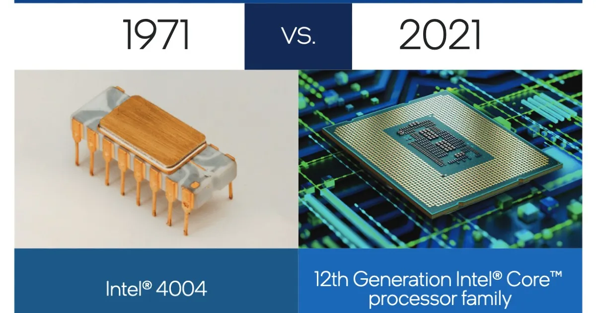

About
This webpage is dedicated to talking about CPU fun facts to help people learn more about one of the best pieces of technology.
Here are some fun and interesting facts
- The first CPU ever made was the intel 4004, which was released on 1971, and had a clock speed of 750kHz
- The firsts CPUs designed for computers, were the size of small rooms. Today CPUs can be found everywhere from a phone to a to refrigerators
- The fastest CPU on the market right now is AMD Ryzen Threadripper 3990X, which has 64 cores
- CPUs generate a lot of heat which is the reason they are equipped with heatsinks and fans to keep them cool. Some cpus require liquid cooling
- The term CPU, stands for Central Processing unit. Which is the brain of any computer or smart phone
- The size of the CPU has shrunk exponentially over the years. With older CPUs measuring inches across and modern CPUs measuring just a few millimeters.
Did you find any of the facts interesting, if so please click on the learn more page.